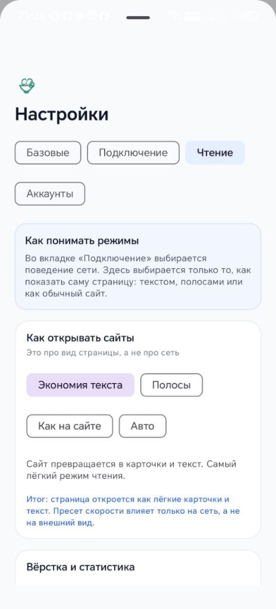

Тяжелый сайт превращается в легкий поток контента
Saylat обрабатывает страницу на вашем VPS и отдает в Android-клиент оптимизированный результат для 2G / EDGE.
Light / Medium / Full
STRIPS для сложных сайтов
Офлайн-кэш

Как начать
1. Поднять серверОдной командой на VPS.
2. Поставить APKС GitHub Releases.
3. Ввести URL
http://ВАШ_IP:87874. Выбрать режимLight для минимального трафика.
До и после

Одна команда
Быстрый старт сервера:
curl -fsSL https://raw.githubusercontent.com/Baddysays/Saylat/main/scripts/install-saylat-server.sh | bash